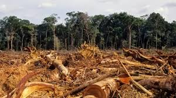
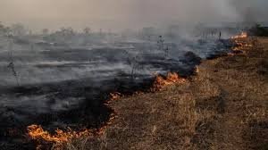
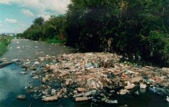
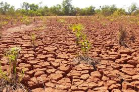

Desmatamento
O desmatamento é um dos principais fatores de degradação do Cerrado. A expansão da agricultura extensiva — principalmente soja, milho e algodão — e da pecuária causa a remoção quase total da vegetação nativa. Estima-se que mais de 50% do Cerrado já foi destruído, tornando-o o bioma mais devastado do país em proporção. Esse processo reduz a biodiversidade, elimina habitats essenciais e acelera processos de erosão e empobrecimento do solo.

Queimadas
As queimadas no Cerrado podem ser naturais, mas atualmente a maioria é causada por ação humana. O fogo frequente provoca a morte de animais, destruição de ninhos, alteração da fertilidade do solo e perda de matéria orgânica. Em anos de seca intensa, incêndios se espalham rapidamente e atingem áreas sensíveis, causando desequilíbrios ecológicos e aumentando a emissão de gases de efeito estufa.
Perda de Espécies
Da perda de biodiversidade no Cerrado é acelerada pela fragmentação de habitats e pela pressão humana. Muitas espécies — como o lobo-guará e o tamanduá-bandeira — já se encontram ameaçadas. A destruição de áreas naturais impede a migração, reprodução e alimentação dos animais, além de afetar plantas endêmicas que só existem nesse bioma. A perda de espécies compromete o equilíbrio ecológico e o funcionamento dos ecossistemas.

Poluição de Rios
A destruição da vegetação do Cerrado compromete a infiltração da água da chuva, que abastece aquíferos importantes como o Guarani. Com menos infiltração, rios e nascentes começam a secar, afetando bacias hidrográficas essenciais para o Brasil. O assoreamento, causado pelo desmatamento, também prejudica a qualidade da água e reduz o volume dos rios.

Solo Degradado
O Cerrado é uma das áreas com maior consumo de agrotóxicos no país. O uso excessivo desses produtos contamina o solo, os lençóis freáticos e os rios, afetando a fauna e a flora. Substâncias tóxicas também prejudicam populações rurais, podendo causar problemas de saúde. A contaminação ambiental altera ciclos naturais e reduz a disponibilidade de água potável.